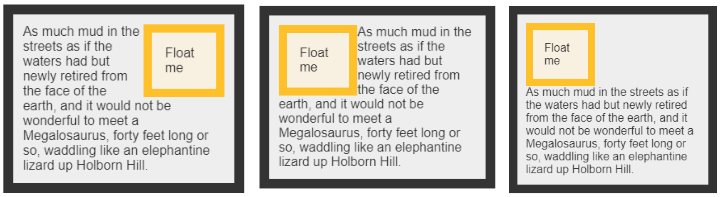

Autoformation CSS
Introduction
CSS veut dire Cascade Style Sheet.
On lie une page HTML à un fichier CSS à l'aide de la ligne :
<link rel=”stylesheet” href=”monFichier.css”>
On peut écrire un commentaire de la facon suivante :
/* Mon super commentaire */
Tout éléments héritent des styles de leur parent.
En cas de conflit, le style le plus proche de l'élément en question va être appliqué.
Sélecteurs
.class: Sélectionne tout les éléments de la classe "class"..class1.class2: Sélectionne tout les éléments qui ont la class1 et la class2 en attribut..class1 .class2: Sélectionne tout les éléments qui ont la class2 dans class1 (pas forcément directement).#id: Sélectionne tout les éléments qui ont l'id donné en attribut.*: Sélectionne tout les éléments.element(ex: p, .class, #id) : Sélectionne tout les éléments "element".element.class: Sélectionne tout les éléments "element" avec la classe donnée.element1,element2: Sélectionne tout les éléments "element1" et "element2.element1 element2: Sélectionne tout les éléments "element2" dans "element1.element1>element2: Sélectionne tout les éléments "element2" où le parent est "element1".element1+element2: Sélectionne tout les éléments "element2" qui sont directement après "element1".element1~element2: Sélectionne tout les éléments "element2" qui sont précédés par "element1".
[attribute]: Sélectionne tout les éléments avec l'attribut "attribute".[attribute=value]: Sélectionne tout les éléments avec l'attribut "attribute" avec la valeur "value".[attribute~=value]: Sélectionne tout les éléments avec l'attribut "attribute" qui contienne le mot "value".[attribute|=value]: Sélectionne tout les éléments avec l'attribut "attribute" qui commence avec le mot "value".[attribute^=value]: Sélectionne tout les éléments avec l'attribut "attribute" qui commence avec la sous-chaine "value".[attribute$=value]: Sélectionne tout les éléments avec l'attribut "attribute" qui finisse avec la sous-chaine "value".[attribute*=value]: Sélectionne tout les éléments avec l'attribut "attribute" qui contienne la sous-chaine "value".
::after: Ajoute quelque chose après l'élément.::before: Ajoute quelque chose avant l'élément.:empty: Sélectionne tout les éléments qui n'ont pas d'enfant.:first-child: Sélectionne les éléments qui sont le premier enfant de leur parent.::first-letter: Sélectionne la première lettre de l'élément.::first-line: Sélectionne la première ligne de l'élément.:first-of-type: Sélectionne les éléments qui sont les premiers éléments de ce type chez leur parent.:last-child: Sélectionne les éléments qui sont les derniers enfant de leur parent.:last-of-type: Sélectionne les éléments qui sont les derniers éléments de ce type chez leur parent.:link: Sélectionne tout les liens qui n'ont pas été visités.:not(selector): Sélectionne tout les éléments qui ne sont pas "selector".:nth-child(n): Sélectionne tout les éléments qui sont le n-ième fils de leur parent.:nth-last-child(n): Sélectionne tout les éléments qui sont le n-ième fils de leur parent en partant du dernier.:nth-of-type: Sélectionne tout les éléments qui sont le n-ième de ce type chez leur parent.:nth-last-of-type: Sélectionne tout les éléments qui sont le n-ième de ce type chez leur parent en partant du dernier.:only-child: Sélectionne tout les éléments qui sont le seul fils de leur parent.:only-of-type: Sélectionne tout les éléments qui sont les seuls à être de ce type chez leur parent.:visited: Sélectionne tout les liens visités.:hover: Sélectionne tout éléments où la souris se trouve dessus.
Propriétés
Généralités
Les tailles sont exprimées en px, pt (fixe) ou en ex,em,% (relatif).
Lien sur les tailles
inherit : hérite de la propriété de son parent pour la propriété concernée.
none : comportement par défaut.
color: couleur de l’élément. Certaine couleurs sont déjà définis et constante selon leur nom.
On peut également les définirs en hexadécimal : #3478BC Ou en code RGB : rgb(250,150,150).
opacity : valeur entre 0 et 1. L'opacité du texte.
Possibilité de préciser avec le format RGBA : rgba(250,150,100,0.9);
Shorthand et Longhand
Font
font-size : la taille de la police.
font-style : normal, italic, oblique, inherit.
italic : certaine police ne peuvent pas être en italique qui est un état du texte, oblique lui force le comportement car transformation du texte.
font-weight : bold,bolder,lighter,normal,inherit.
line-height : espacement entre les lignes. (mettre environ x1.5 la taille du texte).
font-family : la police du texte. possibilité d’en mettre plusieur si le navigateur ne supporte pas les précédentes.
font-family : Tahoma, Garamond, sans-serif;
Certaine police sont basique et incluse dans tous les navigateurs : les Web Safe Font. Généralement on en inclut toujours une à la fin d’une font-family.
Text
text-align: left; center; right; justify, inherit; permet d’aligner le texte.
justify oblige le texte à prendre toute la ligne.
text-decoration : none, underline, overline, blink (pas sur tout les navigateur), inherit, line-through
Ajoute une décoration au texte.
text-transform: lowercase,uppercase,capitalize,none,inherit;
Permet de changer les caractère d’un texte.
text-indent : ajoute une indentation au texte. Peut avoir une valeur négative.
letter-spacing: espace entre les lettre d’un texte.
word-spacing: espace entre les mots.
text-shadow: 1px 2px 3px black;
Déplacement horizontal, vertical, la diffusion de l’ombre et sa couleur.
Modèle des boites
Possibilité de préciser une location : top, bottom, left, right, combinaison...
height : La hauteur par défaut d’un élément est définit par son contenu.
width : La largeur par défaut d’un élément est définit par son type (block ou inline).
Border
border-width : épaisseur de la bordure.
border-style : certaines valeurs sont mal supportées.
border-color : couleur de la bordure. Fonctionne comme color.
border-radius : l’arrondissement des angles.
box-shadow : marche comme text-shadow.
On peut lui donner un sens : inset ou outset.
Position et Placement
float : permet de faire flotter un élément. Positionne et aligne les autres éléments en conséquence. (right left et none)

clear : both, right, left : reprend le comportement par défaut pour l’élément. (permet d’ignorer un float par exemple)
display : inline,none, inline-block : permet de changer le type de l'élément. (block -> inline, très important à bien maîtriser)
Tips et bonnes pratiques
Pour isoler du contenu on peut utiliser les balises <div> et <span>.
padding : Ne dois pas être utilisé pour “positionner” un élément.
position : static, absolute, fixed, relative.
absolute permet alors de modifier les propriétés : top, bottom, left, right.
fixed : permet de placer l’élément selon la fenêtre (et non la page). l’élément est ainsi toujours visible.
relative : permet de modifier les propriétés top, bottom, left, right selon sa position initiale.
z-index : permet de dire quel élément est affiché au dessus plutôt qu’un autre. (priorité)
Liens utiles
Liens tuto CSS part 1Liens tuto CSS part 2